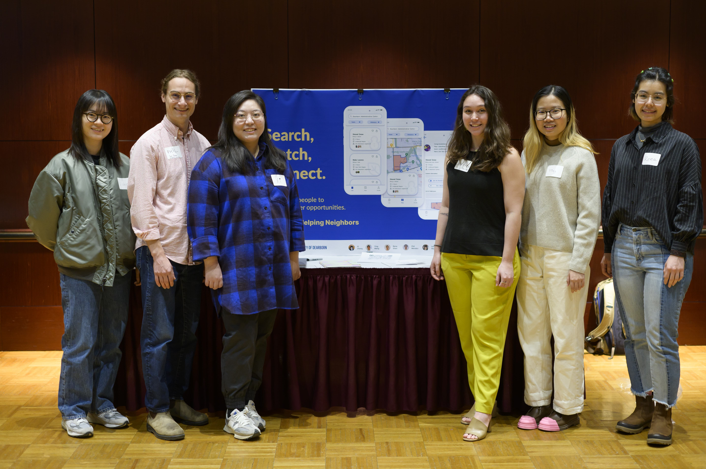
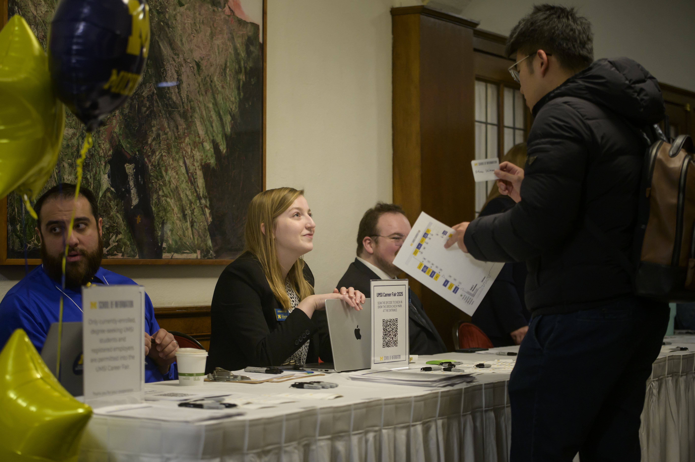

The Power of Closing Well and Reflecting Deeply
A project is not complete simply because the final deliverable has been handed over. The final
stages—closing, reflecting, and translating—are what transform a transient project into
organizational value and personal career momentum.
Responsible handoffs ensure that partners are not left with abandoned tools or undocumented systems they
cannot maintain. Simultaneously, structured reflection forces you to pause and ask: What did I learn
about my technical skills, my teamwork style, and the ethical impact of my work? Without reflection,
experience is just something that happened to you; with reflection, experience becomes expertise.
Learning to translate complex, messy project narratives into clear resume bullets and portfolio case
studies is what turns your UMSI education into your greatest professional asset.
1. Complete and Close Your Project

Value & Narrative: Responsible Offboarding & Handoff
Responsible offboarding is an important part of an engaged learning project. Technical
assets are only half the job; partners and clients should be able to independently maintain,
update, and benefit from the work after the semester ends.
Focus & Objectives
-
Completing & Transitioning Work:
Package code, design files, reports, and technical assets into accessible, usable formats.
-
Closing Relationships Appropriately:
Formally conclude the partnership with gratitude, clarity, and clear future boundaries.
-
Evaluating Impact:
Measure outcomes against initial scoping goals and gather client feedback.
Featured Resources & Handouts
2. Reflect and Translate Your Experience

Value & Narrative: Career Integration & Portfolios
Employers do not just hire technical skills—they hire people who can solve unscripted problems,
collaborate in diverse teams, and deliver results under realistic constraints. This track guides you
in bridging the gap between your academic work and your professional brand, helping you articulate
the full narrative of your growth.
Focus & Objectives
-
Articulating Skills:
Translate complex project work into resume bullets and interview responses.
-
Portfolio Integration:
Document your process, artifacts, decisions, and measurable outcomes.
-
Maintaining Networks:
Keep professional touchpoints open with mentors, partners, and teammates.
Featured Resources & Handouts